Tourism in Bangladesh includes tourism to World Heritage Sites, historical monuments, sea beaches, forests, tribal people, and wildlife of various species. This diversity gives rise to oppurtunity to make one's vacation worthwhile.We will try to cover some of these places.
Cox's Bazar Beach, located at Cox's Bazar, Bangladesh, is the longest natural sea beach in the world running 120 kilometres and 5th longest beach after Praia do Cassino of Brazil, Padre Island on the US Gulf Coast, Eighty Mile Beach in Western Australia, and Ninety Mile Beach of Australia. It is the top tourist destination of Bangladesh.
 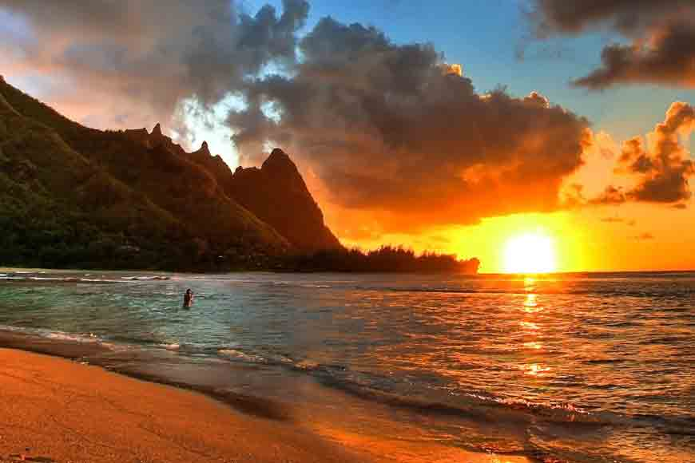
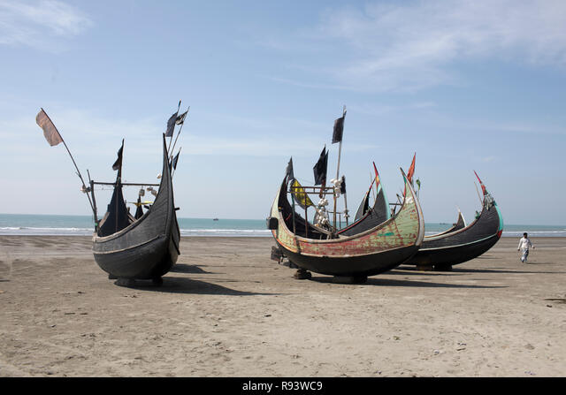
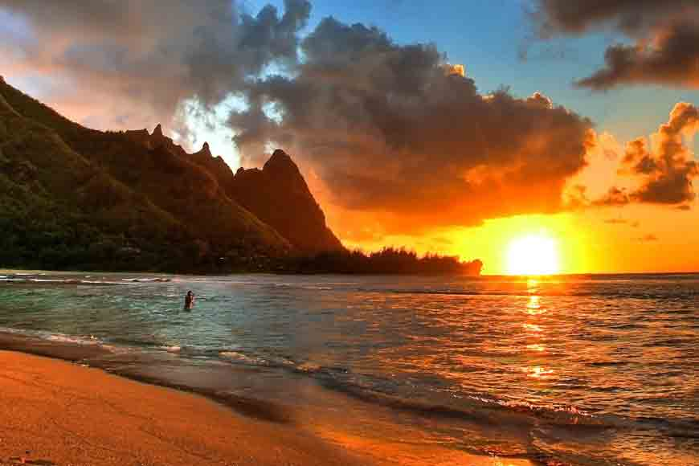
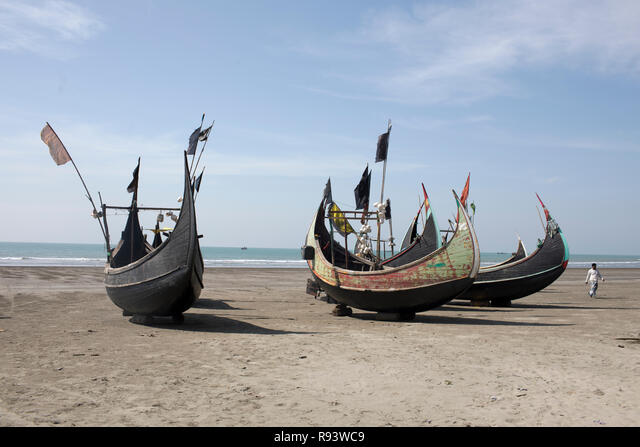
Kolatoli Point:
Kolatoli Point is an important part of Cox's Bazar beach situated near Dolphine intersection of Cox's Bazar city. Many hotel and restaurant are reside in this area. Buses stop near this point. Before restrictions of government, stoppage of bus was the beach area of Kolatoli. Now all bus stop near Dolphine moure. Sayeman Beach Resort is located on the shores of this stretch of beach.
Sugandha Point:
Sugandha Point situated from the north of Kolatoli point. There is a Burmese Market that is famous in Cox's bazar. There were sea food restaurants but demolished by government. It has fly dining restaurant too.
Book a tour
Kuakata is a town in southern Bangladesh known for its panoramic sea beach. Kuakata beach is a sandy expanse 18 kilometres (11 mi) long and 3 kilometres (1.9 mi) wide. From the beach one can have an unobstructed view of both sunrise and sunset over the Bay of Bengal.
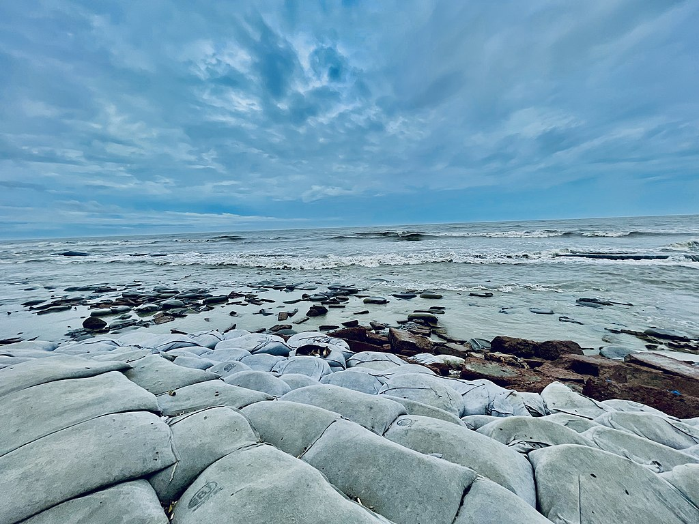 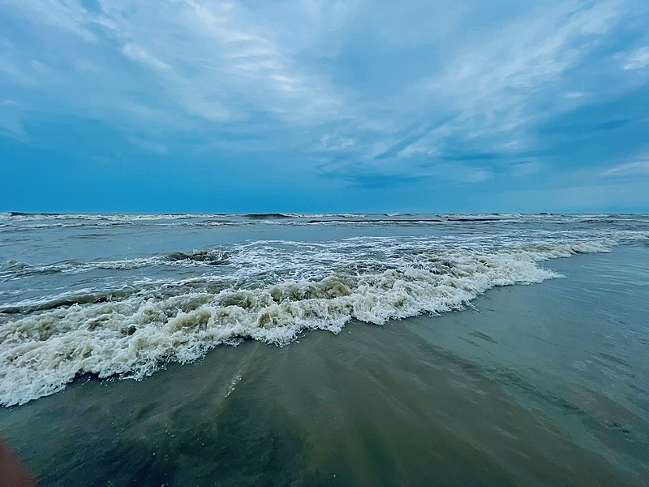 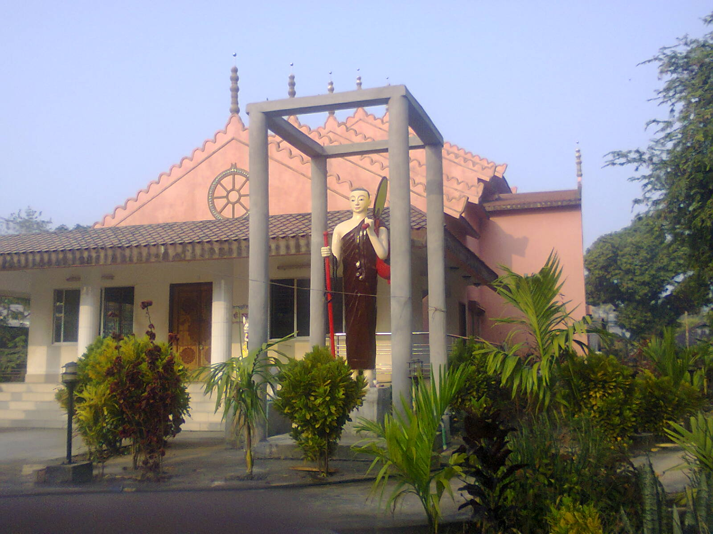The town Kuakata has sea beach named Kuakata Beach. Many tourists visit the place to see the beach although it hasn’t international recognition like Cox's Bazar Beach but it is popular in Bangladesh. There are many places tourist visit such as -
Kuakata National Park
Kuakata Ecopark
Forest of Fatra: The protected mangrove forest on the western side of the beach is known as the 'second Sundarban'
Well of Kuakata: At the beginning of Rakhine village Keranipara near Kuakata Beach is an ancient well near a Buddhist monastery.
Shima Buddhist Monastery: In front of the ancient well is the ancient Seema Buddhist Vihara, which contains a meditating Buddha image made of Ashta dhatu weighing about thirty-seven maunds.
Book a tour
Saint Martin Island is a small island (area only 3 km2) in the northeastern part of the Bay of Bengal, about 9 km south of the tip of the Cox's Bazar-Teknaf peninsula, and forming the southernmost part of Bangladesh. There is a small adjoining island that is separated at high tide, called Chera Dwip. It is about 8 kilometres (5 miles) west of the northwest coast of Myanmar, at the mouth of the Naf River.
 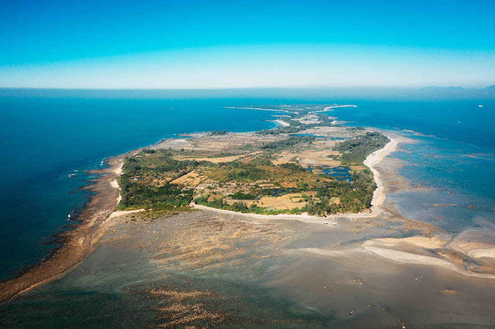
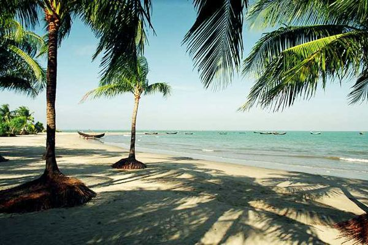
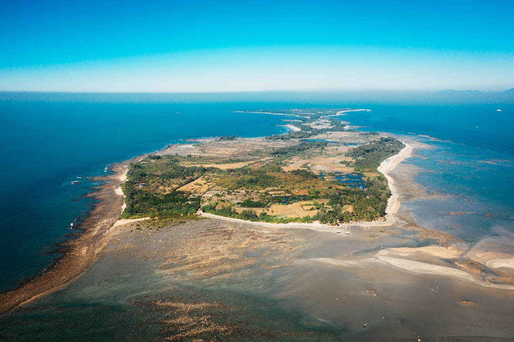
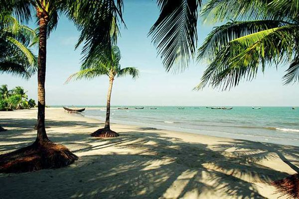
Saint Martin Island has become a tourist spot, and Eight shipping liners run daily trips to the island. Nowadays, tourist has become friendly to Eco tourism. Consequently, eco friendly resort- Josnaloy Beach Resort has become popular to them. Tourists can book their trip either from Chittagong or from Cox's Bazar. The surrounding coral reef has an extension named Chera Dwip. A small bush is there, which is the only green part. People do not live on this part, so it is advisable for the tourists to go there early and come back by afternoon. Book a tour
Khagrachari is a hilly area. It is bounded by Tripura state of India on the north and west, Rangamati district to the east and Chittagong District to the southwest. Notable hill ranges are Golamoon, Chotto Panchari, Karmi Mura, Lutiban, Kuradia, Bhanga Mura, Jopisil. It has three rivers, namely Chengi, Feni and Maini. Chengi is the longest river in Khagrachari. The main ethnic groups living in the district are Tripuris, Chakmas, Bengalis and Marmas.
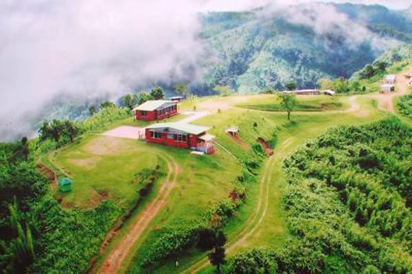 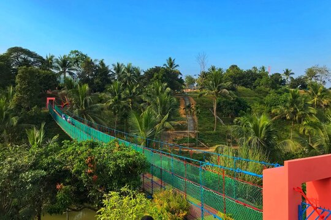
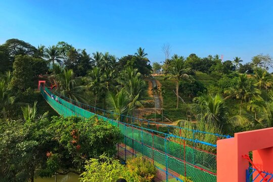
Points of interest-
Sajek
10 No. Jhorna
Suspension Bridge
The Dhigi.
Book a tour
Kaptai lake
Kaptai Lake is a man made lake in south-eastern Bangladesh. It is located in the Kaptai Upazila under Rangamati District of Chittagong Division. The lake was created as a result of building the Kaptai Dam on the Karnaphuli River, as part of the Karnaphuli Hydro-electric project. The Kaptai Lake's average depth is 100 feet (30 m) and maximum depth is 490 feet (150 m). This lake was developed by inundating valleys and plain lands between the many hills.
Hanging Bridge
In Bengali the name of the Hanging Bridge is Jhulonto Bridge and this is also popular to its visitors. This hanging bridge is established on Kaptai Lake. This is the link way of Kaptai Lake. The total height of this bridge is 335 feet and is the landmark icon of Rangamati.
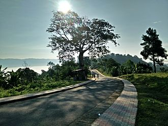
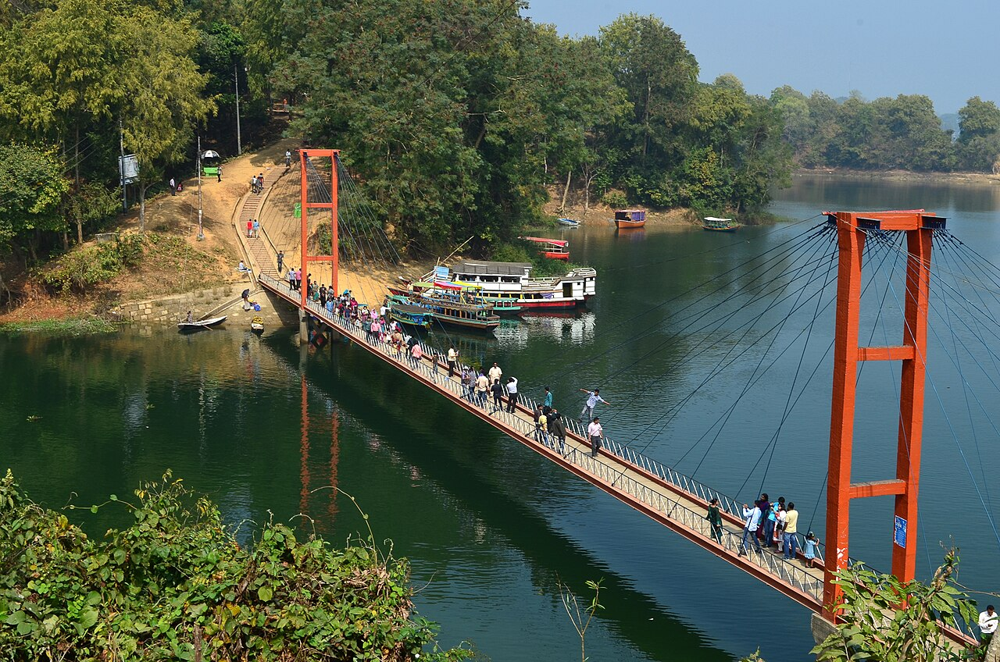
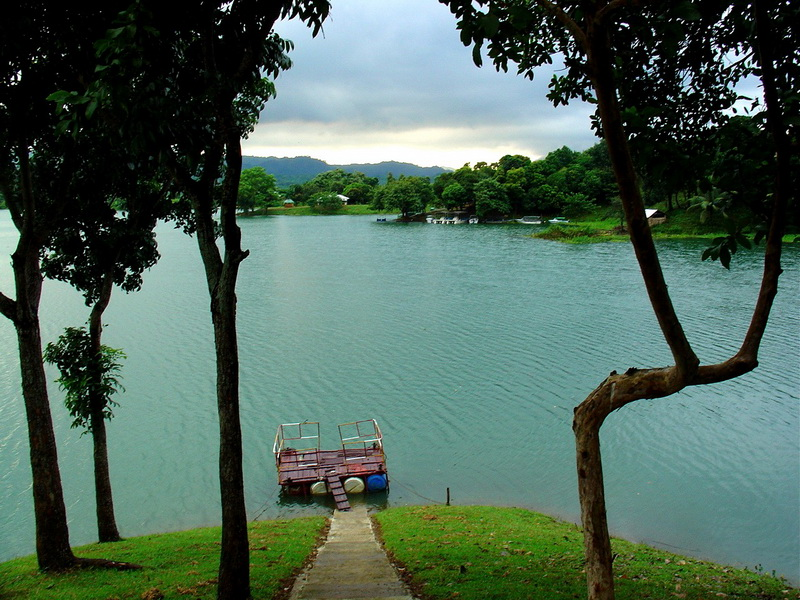
Kaptai National Park
Kaptai National Park cascades between the Karnaphuly and Kaptai Mountain assortments. It was conventional in 1999 and its area is 5,464.78 hectares (13,503.8 acres). Prior to announcement of the national park it was Sitapahar Reserve. It is about 57 kilometre from Chittagong city. In this park one can find plenty of old trees which were planted in 1873. In Kaptai National Park, there is various wildlife such as deer, jungle cat, elephant, monkey, etc. Many species of birds may also be of interest to tourists and bird lovers. Kaptai National Park is a safe and sanctuary for birds and other wildlife. The Forest Division founded picnic spots, and restaurants in this park.
Shuvolong Waterfalls
Shuvolong a place in Barkol sub district, located about 25 kilometres (11 kilometres as the crow flies) away from Rangamati town. There are few waterfalls in Shuvolong area with the largest one falling from as high as 300 feet. In the past several years, this place has turned into a tourist destination due to its waterfalls and nearby market. Shuvolong is accessible by speed boat or motor boats from Rangamati.
Book a tour
Bandarban lies, by bus, eight hours away from Dhaka, two hours from Chittagong and three hours from Cox's Bazar. It is also possible to get there by a six-hour bus ride from Rangamati. The Buddha Dhatu Jadi, the Buddhist temple in Bangladesh, located in Balaghata, 4 km from the town. This place attracts many tourists every year. This Theravada Buddhist temple is made completely in the style of South-East Asia and houses the second largest statue of the Buddha in Bangladesh. The waterfall named Shoilo Propat at Milanchari is another place tourists like to visit. The numerous Buddhist temples, known as kyang in local tongue, and bhihars in the town include the highly notable the Rajvihar (royal vihar) at Jadipara and the Ujanipara Bhihar. Bawm villages around Chimbuk, and Mru villages a little further off, are also lie within a day's journey from the town. Prantik Lake, Jibannagar and Kyachlong Lake are some more places of interest. Boat ride on the river Shangu is one of the main attractions here for tourists. Book a tour
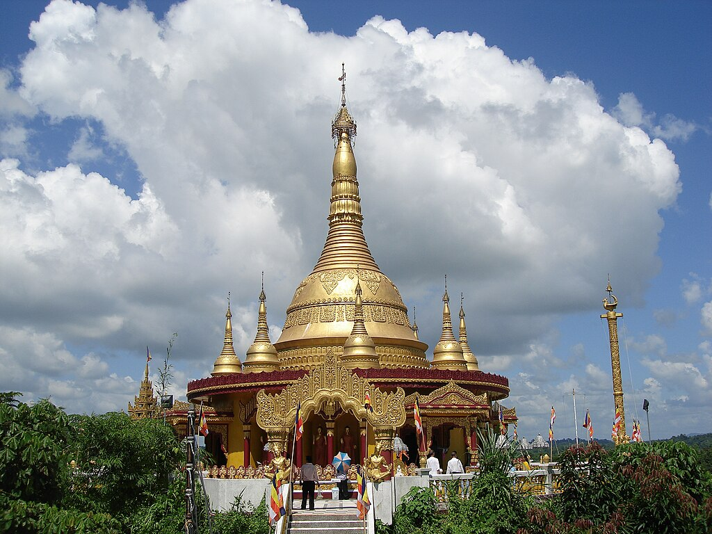

The Sundarbans Mangroves ecoregion on the coast forms the seaward fringe of the delta and is the world's largest mangrove ecosystem, with 20,400 square kilometres (7,900 sq mi) of an area covered. The dominant mangrove species Heritiera fomes is locally known as sundri or sundari. Mangrove forests are not home to a great variety of plants. They have a thick canopy, and the undergrowth is mostly seedlings of the mangrove trees.
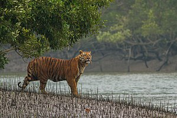 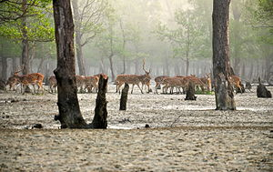 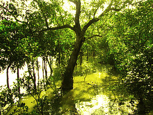
Sundarban National Park
The Sundarban National Park is a National Park, Tiger Reserve, and a Biosphere Reserve in West Bengal, India. It is part of the Sundarbans on the Ganges Delta, and adjacent to the Sundarbans Reserve Forest in Bangladesh. The delta is densely covered by mangrove forests, and is one of the largest reserves for the Bengal tiger. It is also home to a variety of bird, reptile and invertebrate species, including the salt-water crocodile. The present Sundarbans National Park was declared as the core area of Sundarbans Tiger Reserve in 1973 and a wildlife sanctuary in 1977. On 4 May 1984 it was declared a National Park.
Book a tour
Ratargul is about 26 kilometres from Sylhet. There is a 3,325 acres wetland in Sylhet range-2 under the forest department and in that wetland Ratargul swamp forest is about 504 acres .It is located in Gowainghat. After reaching Gowainghat, tourists reserve local engine boat namely "traller" to reach forest. There are two haors, Shimul Bil haor and Neoa Bil Haor, in the south part of the forest.
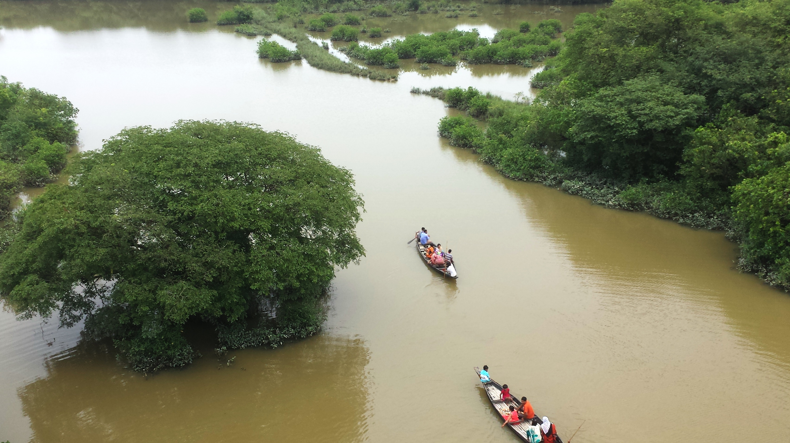 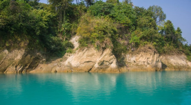 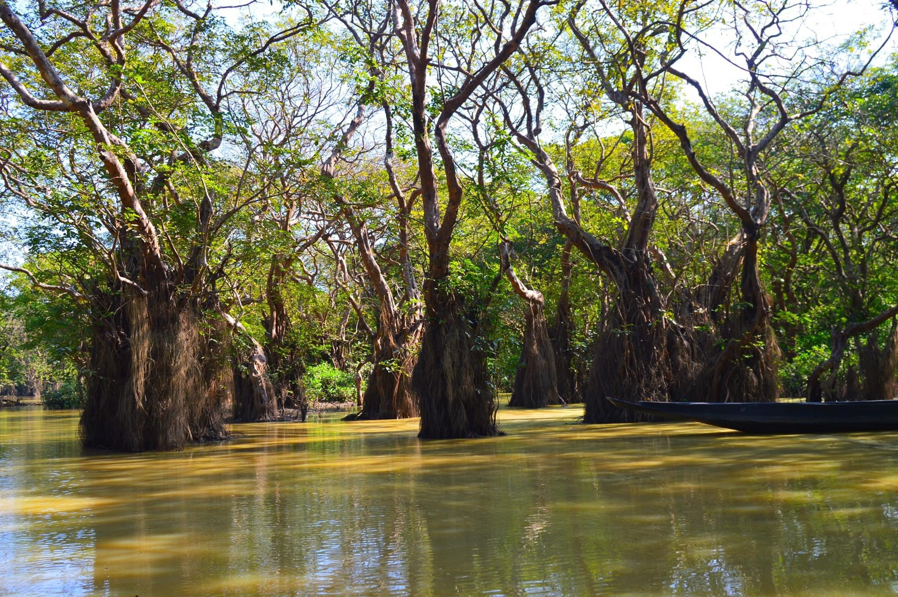Lalakhal is a tourist spot in Jaintiapur, Sylhet District, Bangladesh. Lalakhal is a wide channel in the Sharee River near the Tamabil road. The river is not very deep and is one of the sources of sand in Sylhet. The focal point of the feature is the variety of colours of the water, which varies from blue to green to clear at different points. Book a tour
Sonargaon is one of the old capitals of the historic region of Bengal and was an administrative center of eastern Bengal. It was also a river port. It's hinterland was the center of the muslin trade in Bengal, with a large population of weavers and artisans. According to ancient Greek and Roman accounts, an emporium was located in this hinterland, which archaeologists have identified with the Wari-Bateshwar ruins. The area was a base for the Vanga, Samatata, Sena, and Deva dynasties. Book a tour
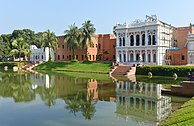

Somapura Mahavihara in Paharpur, Badalgachhi, Naogaon, Bangladesh is among the best known Buddhist viharas or monasteries in the Indian Subcontinent and is one of the most important archaeological sites in the country. It was designated as a UNESCO World Heritage Site in 1985. It is one of the most famous examples of architecture in pre-Islamic Bangladesh. It dates from a period to the nearby Halud Vihara and to the Sitakot Vihara in Nawabganj Upazila of Dinajpur District. Book a tour
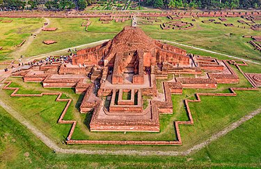 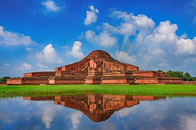 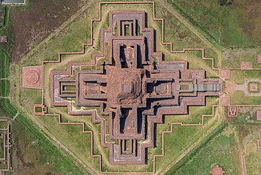